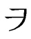

庙讳[461]先生：
“先生”之者，因庙讳而连类尊之也。由此观之，定名而乌可不冠冕堂皇也乎？而《出了象牙之塔》[462]“原名为何”者，《象牙ノ塔

出テ》也。而“价钱若干”者，“定价金贰円八拾钱”也；而所谓“金”者，日本之夷金也。而“哪里有得买”者，“京桥区尾张町二丁目十五番地福永书店”也。然而中国则无之矣；然而“东单牌楼北路西、东亚公司”则可代购之矣；然而付定钱一半矣；然而半月可到矣；然而更久亦难定矣。呜呼噫嘻，我不得而知之也。东亚公司者，夷店也；我亦尝托其代买也；彼盖当知“哪里有得买”也，然而并以“福永书店”告之，则更为稳当也。然而信纸已完也。于是乎鲁迅乃只得顿首者也。〔一月十二日〕
注 释
[461] 庙讳 封建时代称皇帝父祖名讳为“庙讳”。钱玄同和清代康熙“玄烨”同一“玄”字，故这里用作对钱玄同的戏称。
[462] 《出了象牙之塔》 文艺论文集，日本厨川白村（1880—1923）著，鲁迅译并作《后记》，1925年未名社出版，《未名丛刊》之一。